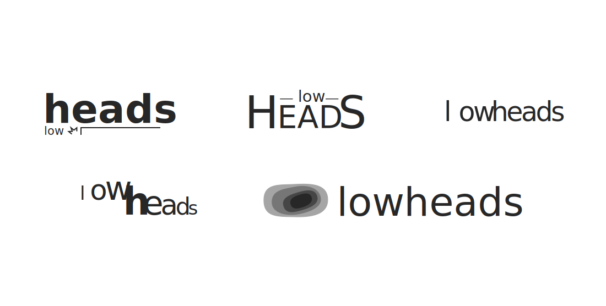
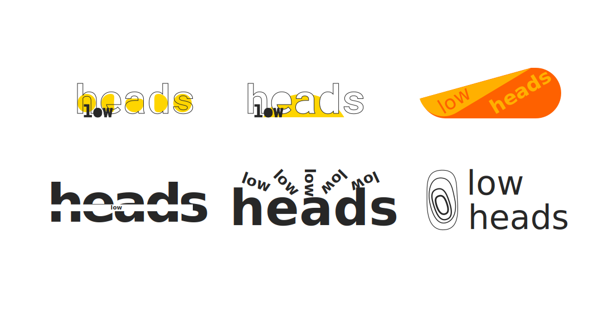

Work: Lowheads
In the fall of 2020, I developed a new logo for the undeground streetwear curator Lowheads. Building off an existing web presence and style, I worked with their founder to come up with a mark that felt unique to the brand yet took a back seat to the creators and makers that Low Heads promotes.

The final logo in black and white.

Other versions designed to work over various backgrounds
 Rejected early iterations